Stat6: Demo
Ordinationen I
PCA
if(!require(labdsv)){install.packages("labdsv")}
library(labdsv)
# Für Ordinationen benötigen wir Matrizen, nicht Data.frames
# Generieren von Daten
raw <- matrix(c(1, 2, 2.5, 2.5, 1, 0.5, 0, 1, 2, 4, 3, 1), nrow = 6)
colnames(raw) <- c("spec.1", "spec.2")
rownames(raw) <- c("r1", "r2", "r3", "r4", "r5", "r6")
raw spec.1 spec.2
r1 1.0 0
r2 2.0 1
r3 2.5 2
r4 2.5 4
r5 1.0 3
r6 0.5 1# Originale Daten im zweidimensionalen Raum
x1 <- raw[,1]
y1 <- raw[,2]
z <- c(rep(1:6))
# Plot Abhängigkeit der Arten vom Umweltgradienten
plot(c(x1, y1)~c(z, z), type = "n", axes = T, bty = "l",
las = 1, xlim = c(1,6), ylim = c(0,5),
xlab = "Umweltgradient", ylab = "Deckung der Arten")
points(x1~z, pch = 21, type = "b")
points(y1~z, pch = 16, type = "b")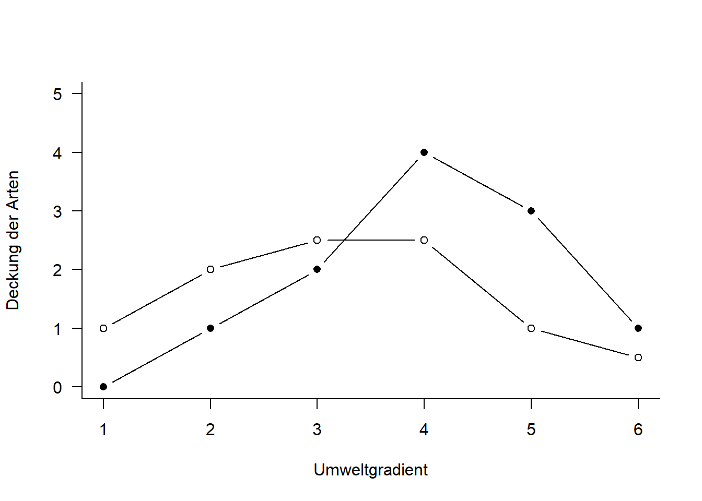
# zentrierte Daten
cent <- scale(raw, scale = F)
x2 <- cent[,1]
y2 <- cent[,2]
# rotierte Daten
o.pca <- pca(raw)
x3 <- o.pca$scores[,1]
y3 <- o.pca$scores[,2]
# Visualisierung der Schritte im Ordinationsraum
plot(c(y1, y2, y3)~c(x1, x2, x3), type = "n", axes = T, bty = "l", las = 1,
xlim = c(-4, 4), ylim = c(-4, 4), xlab = "Art 1", ylab= "Art 2")
points(y1~x1, pch = 21, type = "b", col = "green", lwd = 2)
points(y2~x2, pch = 16, type = "b",col = "red", lwd = 2)
points(y3~x3, pch = 17, type = "b", col = "blue", lwd = 2)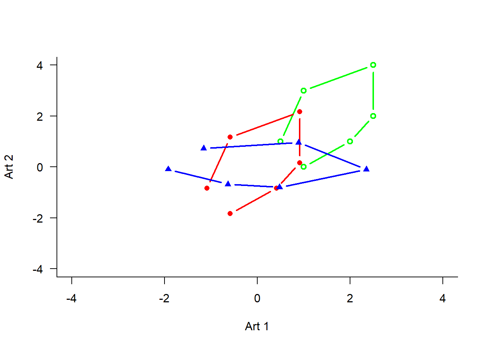
# Durchführung der PCA
o.pca <- pca(raw)
# Koordinaten im Ordinationsraum
o.pca$scores PC1 PC2
r1 -1.9216223 -0.09357697
r2 -0.6353776 -0.68143293
r3 0.4762699 -0.80076373
r4 2.3503705 -0.10237502
r5 0.8895287 0.95400610
r6 -1.1591692 0.72414255# Korrelationen der Variablen mit den Ordinationsachsen
o.pca$loadings PC1 PC2
spec.1 0.3491944 -0.9370503
spec.2 0.9370503 0.3491944#Erklärte Varianz der Achsen
E <- o.pca$sdev^2 / o.pca$totdev * 100
E[1] 82.40009 17.59991# mit prcomp
pca.2 <- prcomp(raw, scale = F)
summary(pca.2)Importance of components:
PC1 PC2
Standard deviation 1.548 0.7154
Proportion of Variance 0.824 0.1760
Cumulative Proportion 0.824 1.0000plot(pca.2)
biplot(pca.2)
# mit vegan
if(!require(vegan)){install.packages("vegan")}
library("vegan")
# Die Funktion rda führt ein PCA aus an wenn nicht Artdaten UND Umweltdaten definiert werden
pca.3 <- rda(raw, scale = FALSE)
#scores(pca.3, display = c("sites"))
#scores(pca.3, display = c("species"))
summary(pca.3, axes = 0)
Call:
rda(X = raw, scale = FALSE)
Partitioning of variance:
Inertia Proportion
Total 2.908 1
Unconstrained 2.908 1
Eigenvalues, and their contribution to the variance
Importance of components:
PC1 PC2
Eigenvalue 2.396 0.5119
Proportion Explained 0.824 0.1760
Cumulative Proportion 0.824 1.0000
Scaling 2 for species and site scores
* Species are scaled proportional to eigenvalues
* Sites are unscaled: weighted dispersion equal on all dimensions
* General scaling constant of scores: biplot(pca.3)
# Mit Beispieldaten aus Wildi
if(!require(dave)){install.packages("dave")}
library(dave)
data(sveg)str(sveg)
summary(sveg)
names(sveg)# PCA: Deckungen Wurzeltransformiert, cor=T erzwingt Nutzung der Korrelationsmatrix
pca.5 <- pca(sveg^0.25, cor = T)# Koordinaten im Ordinationsraum
pca.5$scores
# Korrelationen der Variablen mit den Ordinationsachsen
pca.5$loadings# Erklärte Varianz der Achsen in Prozent (sdev ist die Wurzel daraus)
E <- pca.5$sdev^2 / pca.5$totdev * 100
E [1] 2.061885e+01 8.098205e+00 6.070537e+00 3.666650e+00 3.322363e+00
[6] 3.128942e+00 3.003875e+00 2.634636e+00 2.605558e+00 2.449637e+00
[11] 2.339344e+00 2.265430e+00 2.116464e+00 2.046578e+00 1.969912e+00
[16] 1.871020e+00 1.777063e+00 1.693483e+00 1.524015e+00 1.503332e+00
[21] 1.434245e+00 1.378271e+00 1.329404e+00 1.291336e+00 1.251895e+00
[26] 1.186157e+00 1.109340e+00 1.068661e+00 1.044385e+00 9.891552e-01
[31] 9.764586e-01 8.869747e-01 8.451212e-01 8.049318e-01 7.603242e-01
[36] 7.311274e-01 6.945830e-01 6.339064e-01 6.063542e-01 5.502527e-01
[41] 5.411059e-01 4.956931e-01 4.795188e-01 4.601244e-01 3.936176e-01
[46] 3.477631e-01 3.402128e-01 3.165971e-01 2.951856e-01 2.728882e-01
[51] 2.635725e-01 2.233500e-01 2.125542e-01 1.989449e-01 1.681852e-01
[56] 1.555571e-01 1.485298e-01 1.271079e-01 9.164615e-02 7.880113e-02
[61] 5.913306e-02 5.113452e-02 4.066351e-30E[1:5][1] 20.618848 8.098205 6.070537 3.666650 3.322363# PCA-Plot der Lage der Beobachtungen im Ordinationsraum
plot(pca.5$scores[,1], pca.5$scores[,2], type = "n", asp = 1, xlab = "PC1", ylab = "PC2")
points(pca.5$scores[,1], pca.5$scores[,2], pch = 18)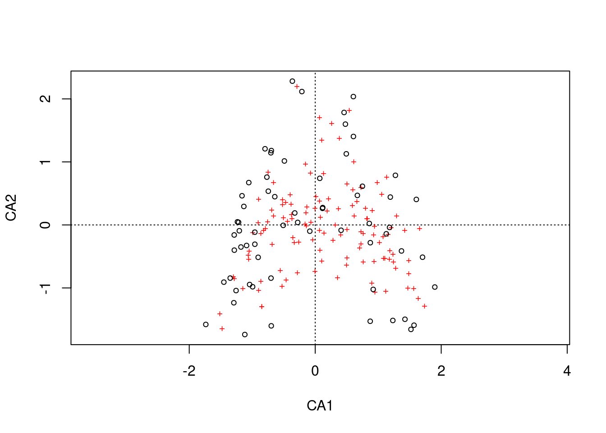
# Subjektive Auswahl von Arten zur Darstellung
sel.sp <- c(3, 11, 23, 39, 46, 72, 77, 96)
snames <- names(sveg[,sel.sp])
snames[1] "Vaccinium.oxycoccos" "Carex.echinata" "Arnica.montana"
[4] "Carex.pulicaris" "Sphagnum.recurvum" "Viola.palustris"
[7] "Galium.uliginosum" "Stachys.officinalis"# PCA-Plot der Korrelationen der Variablen (hier Arten) mit den Achsen (h)
x <- pca.5$loadings[,1]
y <- pca.5$loadings[,2]
plot(x, y, type = "n", asp = 1)
arrows(0,0, x[sel.sp], y[sel.sp], length = 0.08)
text(x[sel.sp], y[sel.sp], snames, pos = 1, cex = 0.6)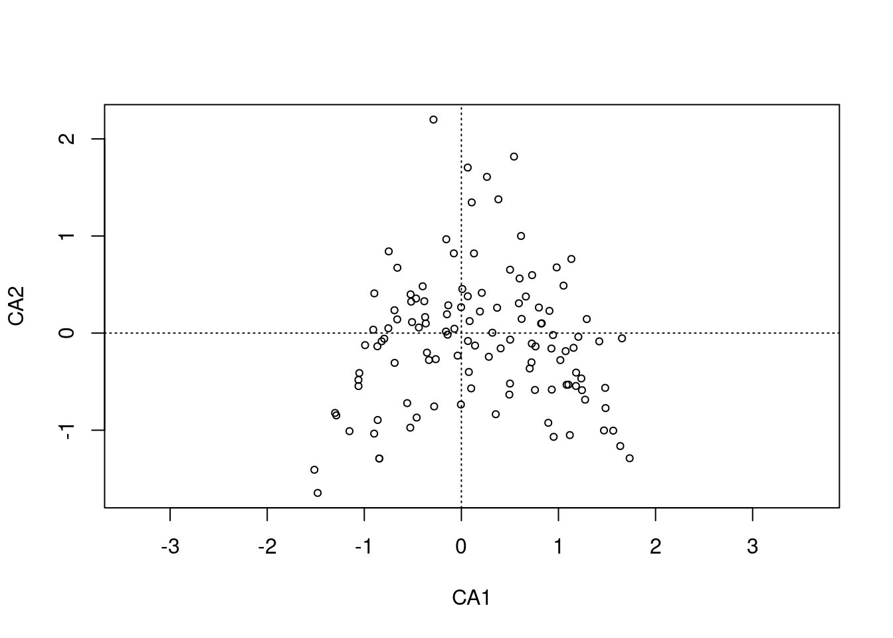
# Mit vegan
pca.6 <- rda(sveg^0.25, scale = TRUE)
# Erklärte Varianz der Achsen
summary(pca.6, axes = 0)
Call:
rda(X = sveg^0.25, scale = TRUE)
Partitioning of correlations:
Inertia Proportion
Total 119 1
Unconstrained 119 1
Eigenvalues, and their contribution to the correlations
Importance of components:
PC1 PC2 PC3 PC4 PC5 PC6 PC7
Eigenvalue 24.5364 9.63686 7.22394 4.36331 3.95361 3.72344 3.57461
Proportion Explained 0.2062 0.08098 0.06071 0.03667 0.03322 0.03129 0.03004
Cumulative Proportion 0.2062 0.28717 0.34788 0.38454 0.41777 0.44906 0.47909
PC8 PC9 PC10 PC11 PC12 PC13 PC14
Eigenvalue 3.13522 3.10061 2.9151 2.78382 2.69586 2.51859 2.43543
Proportion Explained 0.02635 0.02606 0.0245 0.02339 0.02265 0.02116 0.02047
Cumulative Proportion 0.50544 0.53150 0.5560 0.57939 0.60204 0.62320 0.64367
PC15 PC16 PC17 PC18 PC19 PC20 PC21
Eigenvalue 2.3442 2.22651 2.11470 2.01524 1.81358 1.78896 1.70675
Proportion Explained 0.0197 0.01871 0.01777 0.01693 0.01524 0.01503 0.01434
Cumulative Proportion 0.6634 0.68208 0.69985 0.71679 0.73203 0.74706 0.76140
PC22 PC23 PC24 PC25 PC26 PC27 PC28
Eigenvalue 1.64014 1.58199 1.53669 1.48976 1.41153 1.32011 1.27171
Proportion Explained 0.01378 0.01329 0.01291 0.01252 0.01186 0.01109 0.01069
Cumulative Proportion 0.77518 0.78848 0.80139 0.81391 0.82577 0.83687 0.84755
PC29 PC30 PC31 PC32 PC33 PC34
Eigenvalue 1.24282 1.177095 1.161986 1.05550 1.005694 0.957869
Proportion Explained 0.01044 0.009892 0.009765 0.00887 0.008451 0.008049
Cumulative Proportion 0.85800 0.867887 0.877652 0.88652 0.894973 0.903022
PC35 PC36 PC37 PC38 PC39 PC40
Eigenvalue 0.904786 0.870042 0.826554 0.754349 0.721562 0.654801
Proportion Explained 0.007603 0.007311 0.006946 0.006339 0.006064 0.005503
Cumulative Proportion 0.910626 0.917937 0.924883 0.931222 0.937285 0.942788
PC41 PC42 PC43 PC44 PC45 PC46
Eigenvalue 0.643916 0.589875 0.570627 0.547548 0.468405 0.413838
Proportion Explained 0.005411 0.004957 0.004795 0.004601 0.003936 0.003478
Cumulative Proportion 0.948199 0.953156 0.957951 0.962552 0.966488 0.969966
PC47 PC48 PC49 PC50 PC51 PC52
Eigenvalue 0.404853 0.376750 0.351271 0.324737 0.313651 0.265787
Proportion Explained 0.003402 0.003166 0.002952 0.002729 0.002636 0.002234
Cumulative Proportion 0.973368 0.976534 0.979486 0.982215 0.984851 0.987084
PC53 PC54 PC55 PC56 PC57 PC58
Eigenvalue 0.252939 0.236744 0.200140 0.185113 0.176750 0.151258
Proportion Explained 0.002126 0.001989 0.001682 0.001556 0.001485 0.001271
Cumulative Proportion 0.989210 0.991199 0.992881 0.994436 0.995922 0.997193
PC59 PC60 PC61 PC62
Eigenvalue 0.1090589 0.093773 0.0703683 0.0608501
Proportion Explained 0.0009165 0.000788 0.0005913 0.0005113
Cumulative Proportion 0.9981093 0.998897 0.9994887 1.0000000
Scaling 2 for species and site scores
* Species are scaled proportional to eigenvalues
* Sites are unscaled: weighted dispersion equal on all dimensions
* General scaling constant of scores: # PCA-Plot der Lage der Beobachtungen im Ordinationsraum
biplot(pca.6, display = "sites", type = "points", scaling = 1)
# Subjektive Auswahl von Arten zur Darstellung
sel.sp <- c(3, 11, 23, 39, 46, 72, 77, 96)
snames <- names(sveg[,sel.sp])
snames[1] "Vaccinium.oxycoccos" "Carex.echinata" "Arnica.montana"
[4] "Carex.pulicaris" "Sphagnum.recurvum" "Viola.palustris"
[7] "Galium.uliginosum" "Stachys.officinalis"# PCA-Plot der Korrelationen der Variablen (hier Arten) mit den Achsen (h)
scores <- scores(pca.6, display = "species")
x <- scores[,1]
y <- scores[,2]
plot(x, y, type = "n", asp = 1)
arrows(0,0, x[sel.sp], y[sel.sp], length = 0.08)
text(x[sel.sp], y[sel.sp], snames, pos = 1, cex = 0.6)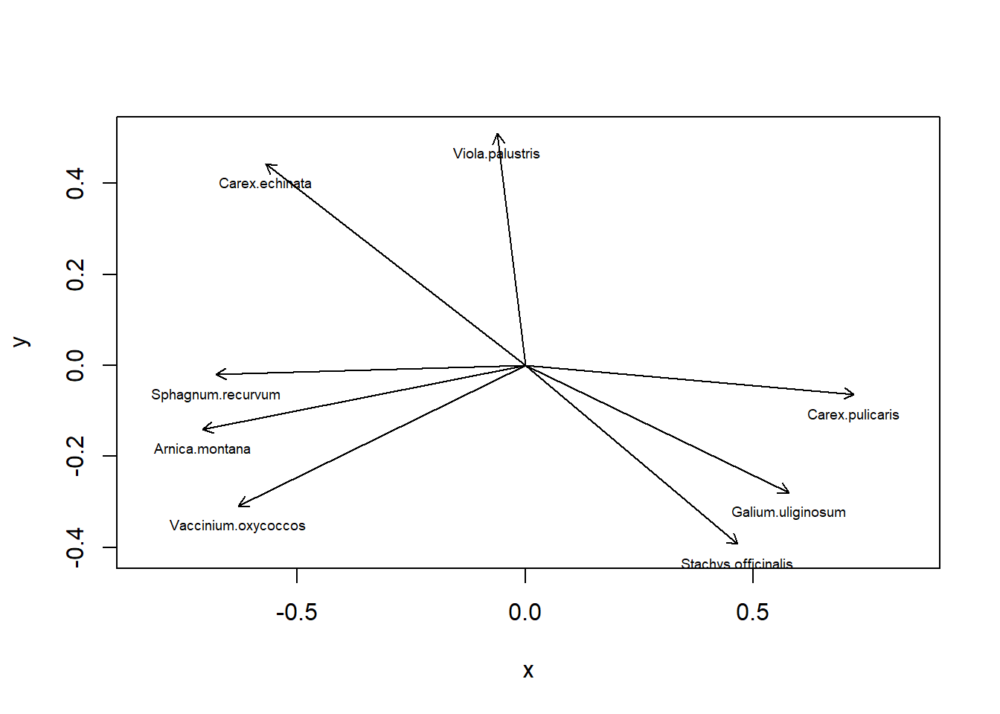
# Mit angepassten Achsen
plot(x, y, type = "n", asp = 1, xlim = c(-1, 1), ylim = c(-0.6, 0.6))
arrows(0,0, x[sel.sp], y[sel.sp], length = 0.08)
text(x[sel.sp], y[sel.sp], snames, pos = 1, cex = 0.6)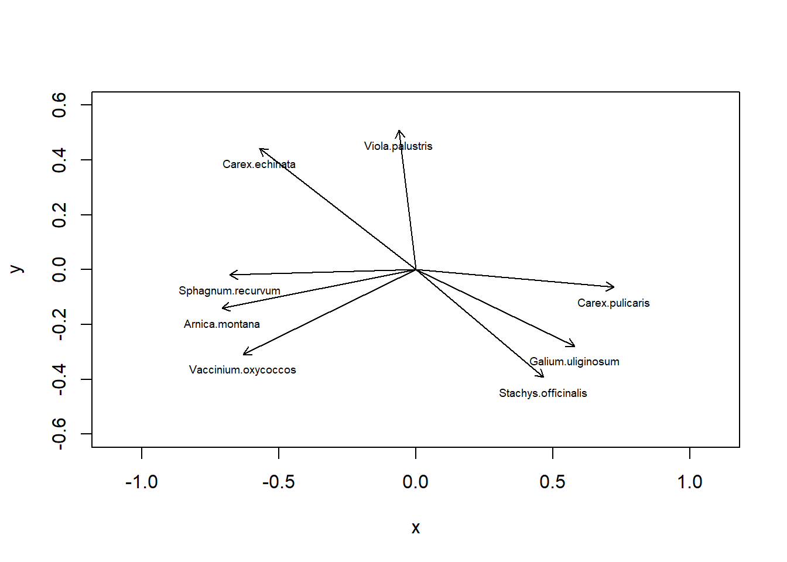
CA
ca.1 <- cca(sveg^0.5)
# Arten (o) und Communities (+) plotten
plot(ca.1)
# Nur Arten plotten
plot(ca.1, display = "species", type = "points")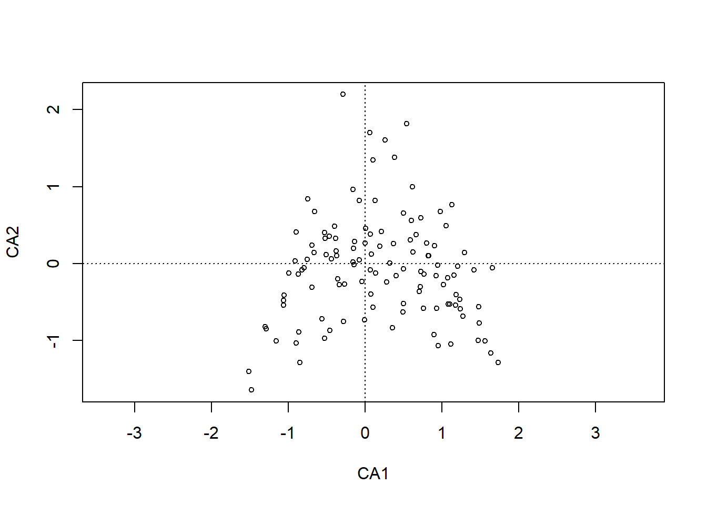
# Anteilige Varianz, die durch die ersten beiden Achsen erklärt wird
ca.1$CA$eig[1:2] / sum(ca.1$CA$eig) CA1 CA2
0.1938717 0.0784178 summary(eigenvals(ca.1))Importance of components:
CA1 CA2 CA3 CA4 CA5 CA6 CA7
Eigenvalue 0.4248 0.17182 0.12995 0.09102 0.07954 0.07274 0.06705
Proportion Explained 0.1939 0.07842 0.05931 0.04154 0.03630 0.03320 0.03060
Cumulative Proportion 0.1939 0.27229 0.33160 0.37314 0.40944 0.44264 0.47324
CA8 CA9 CA10 CA11 CA12 CA13 CA14
Eigenvalue 0.06245 0.05811 0.05348 0.05261 0.05133 0.04868 0.0480
Proportion Explained 0.02850 0.02652 0.02441 0.02401 0.02343 0.02222 0.0219
Cumulative Proportion 0.50174 0.52826 0.55267 0.57668 0.60010 0.62232 0.6442
CA15 CA16 CA17 CA18 CA19 CA20 CA21
Eigenvalue 0.04421 0.04279 0.03913 0.03752 0.03699 0.03412 0.03309
Proportion Explained 0.02018 0.01953 0.01786 0.01712 0.01688 0.01557 0.01510
Cumulative Proportion 0.66440 0.68393 0.70179 0.71892 0.73580 0.75137 0.76647
CA22 CA23 CA24 CA25 CA26 CA27 CA28
Eigenvalue 0.03253 0.03033 0.02963 0.02718 0.02621 0.02486 0.02372
Proportion Explained 0.01485 0.01384 0.01352 0.01241 0.01196 0.01135 0.01083
Cumulative Proportion 0.78132 0.79516 0.80869 0.82109 0.83305 0.84440 0.85523
CA29 CA30 CA31 CA32 CA33 CA34
Eigenvalue 0.02262 0.021397 0.020274 0.018805 0.018216 0.017737
Proportion Explained 0.01032 0.009765 0.009253 0.008582 0.008314 0.008095
Cumulative Proportion 0.86555 0.875318 0.884571 0.893153 0.901467 0.909561
CA35 CA36 CA37 CA38 CA39 CA40
Eigenvalue 0.016855 0.01422 0.014044 0.013002 0.011367 0.011185
Proportion Explained 0.007693 0.00649 0.006409 0.005934 0.005188 0.005105
Cumulative Proportion 0.917254 0.92374 0.930153 0.936087 0.941275 0.946379
CA41 CA42 CA43 CA44 CA45 CA46
Eigenvalue 0.010417 0.010172 0.009513 0.009183 0.008162 0.007993
Proportion Explained 0.004754 0.004643 0.004342 0.004191 0.003725 0.003648
Cumulative Proportion 0.951133 0.955776 0.960118 0.964308 0.968033 0.971681
CA47 CA48 CA49 CA50 CA51 CA52
Eigenvalue 0.006900 0.006684 0.006108 0.005493 0.00515 0.004995
Proportion Explained 0.003149 0.003051 0.002788 0.002507 0.00235 0.002279
Cumulative Proportion 0.974830 0.977881 0.980668 0.983176 0.98553 0.987805
CA53 CA54 CA55 CA56 CA57 CA58
Eigenvalue 0.004426 0.004011 0.003517 0.003455 0.003059 0.002279
Proportion Explained 0.002020 0.001830 0.001605 0.001577 0.001396 0.001040
Cumulative Proportion 0.989825 0.991656 0.993261 0.994837 0.996233 0.997274
CA59 CA60 CA61 CA62
Eigenvalue 0.0019296 0.0017784 0.0011904 0.0010752
Proportion Explained 0.0008807 0.0008116 0.0005433 0.0004907
Cumulative Proportion 0.9981544 0.9989660 0.9995093 1.0000000DCA
library(vegan)
dca.1 <- decorana(sveg, mk = 10)
plot(dca.1, display = "sites", type = "point")
dca.2 <- decorana(sveg, mk = 100)
plot(dca.2, display = "sites", type = "point")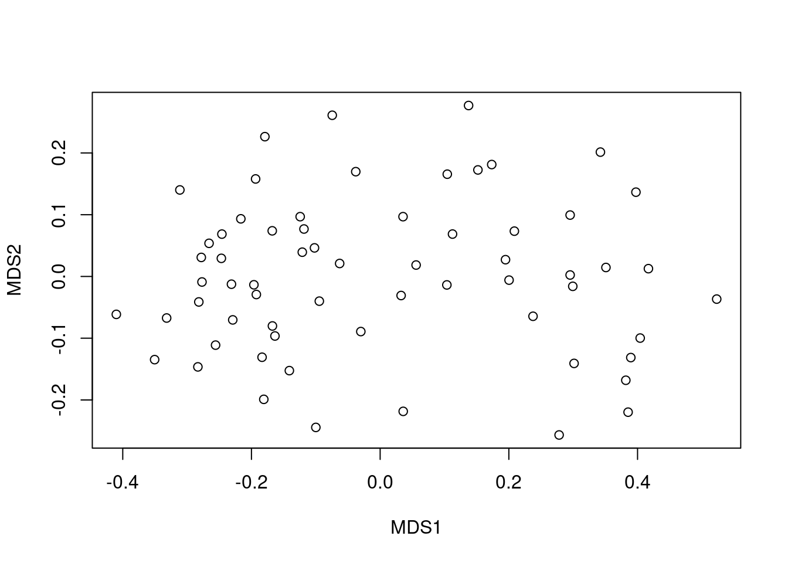
NMDS
# Distanzmatrix als Start erzeugen
mde <- vegdist(sveg, method = "euclidean")
# Alternative mit einem für Vegetationsdaten häufig verwendeten Dissimilarity-index
mde <- vegdist(sveg, method = "bray")
#Z wei verschiedene NMDS-Methoden
if(!require(MASS)){install.packages("MASS")}
library(MASS)
set.seed(1) # macht man, wenn man bei einer Wiederholung exakt die gleichen Ergebnisse will
imds <- isoMDS(mde, k = 2)initial value 16.524491
iter 5 value 12.518681
iter 10 value 12.025808
iter 10 value 12.020751
iter 10 value 12.020751
final value 12.020751
convergedset.seed(1)
mmds <- metaMDS(mde, k = 2)Run 0 stress 0.1179909
Run 1 stress 0.1179909
... Procrustes: rmse 1.11122e-05 max resid 4.697213e-05
... Similar to previous best
Run 2 stress 0.170918
Run 3 stress 0.1529993
Run 4 stress 0.1179909
... Procrustes: rmse 2.021269e-06 max resid 1.184555e-05
... Similar to previous best
Run 5 stress 0.1252011
Run 6 stress 0.1583424
Run 7 stress 0.1181212
... Procrustes: rmse 0.006525662 max resid 0.04396629
Run 8 stress 0.1596312
Run 9 stress 0.1630026
Run 10 stress 0.1179909
... New best solution
... Procrustes: rmse 3.475822e-06 max resid 2.360888e-05
... Similar to previous best
Run 11 stress 0.1538119
Run 12 stress 0.1252011
Run 13 stress 0.1500845
Run 14 stress 0.1251634
Run 15 stress 0.1251634
Run 16 stress 0.1179909
... Procrustes: rmse 5.655652e-06 max resid 1.960818e-05
... Similar to previous best
Run 17 stress 0.1179909
... Procrustes: rmse 7.036898e-06 max resid 2.755273e-05
... Similar to previous best
Run 18 stress 0.1179909
... Procrustes: rmse 1.0129e-05 max resid 3.793497e-05
... Similar to previous best
Run 19 stress 0.1251572
Run 20 stress 0.1179909
... Procrustes: rmse 5.011736e-06 max resid 2.261906e-05
... Similar to previous best
*** Solution reachedplot(imds$points)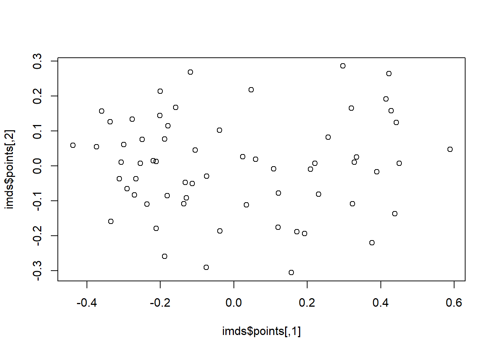
plot(mmds$points)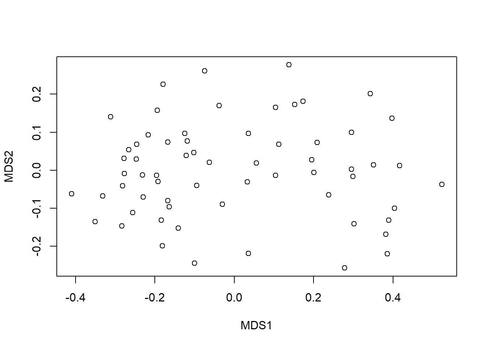
#Stress = S² = Abweichung der zweidimensionalen NMDS-Lösung von der originalen Distanzmatrix
stressplot(imds, mde)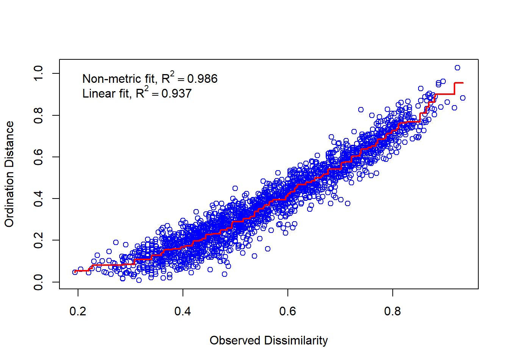
stressplot(mmds, mde)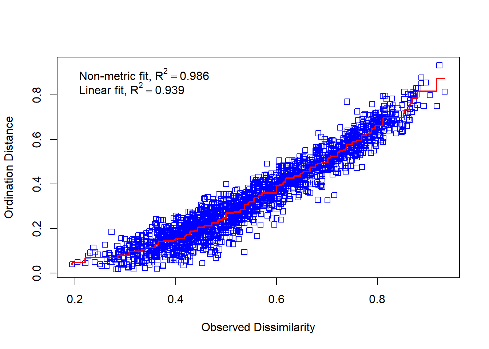